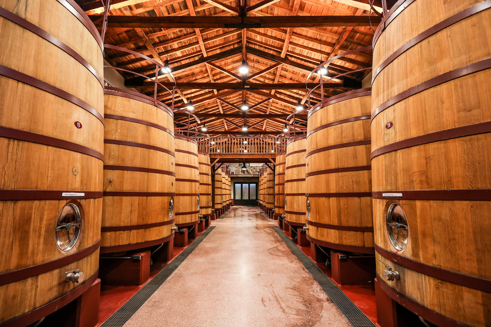

Historia

3Elaboración del vino
Aquí te presento una descripción general de cómo se realiza la elaboración del vino:
-
- Recolección de las uvas:
- El proceso comienza con la cosecha de las uvas en el momento óptimo de madurez. La calidad de las uvas es fundamental para la calidad del vino final.
-
- Despalillado y estrujado:
- Las uvas son despojadas de sus racimos (despalillado) y luego se aplastan (estrujado) para liberar el jugo y romper las pieles, lo que permitirá una mejor extracción de sabores y compuestos durante la fermentación.
-
- Maceración:
- En el caso de vinos tintos, las pieles, semillas y pulpa se dejan en contacto con el jugo durante un período de tiempo variable para extraer color, taninos y aromas. Este proceso es importante para determinar las características del vino final.
-
- Fermentación:
- El mosto resultante (mezcla de jugo, pulpa y, en algunos casos, pieles) se somete a la fermentación. Las levaduras naturales o añadidas convierten los azúcares del mosto en alcohol y dióxido de carbono. Este proceso puede llevarse a cabo en tanques de acero inoxidable, barricas de roble u otros recipientes, según el tipo de vino y las preferencias del enólogo.
-
- Prensado:
- Después de la fermentación, en el caso de vinos tintos, se realiza el prensado para extraer el líquido restante de las pieles y las semillas. En el caso de vinos blancos, generalmente se prensan las uvas antes de la fermentación para obtener un mosto claro.
-
- Fermentación maloláctica (opcional):
- En algunos vinos, especialmente tintos y algunos blancos, se permite una segunda fermentación llamada fermentación maloláctica, en la que el ácido málico se convierte en ácido láctico, suavizando la acidez del vino.
-
- Añejamiento:
- El vino puede pasar un tiempo en barricas de roble, tanques de acero inoxidable u otros recipientes para mejorar sus características. Esto puede variar desde unos pocos meses hasta varios años, según el tipo de vino y su estilo.
-
- Clarificación y filtración:
- El vino puede ser clarificado y filtrado para eliminar partículas en suspensión y mejorar la claridad.
-
- Embotellado:
- Una vez que el vino ha alcanzado la madurez deseada y se han logrado los objetivos de sabor y estilo, se embotella. Algunos vinos pueden seguir envejeciendo en la botella antes de ser comercializados.
- Es importante mencionar que hay muchas variaciones en este proceso, y cada bodega puede tener sus propias técnicas y métodos que reflejan su estilo único. Además, la elaboración de vinos espumosos (como el champagne) y vinos de postre (como el vino de hielo) tiene procesos adicionales específicos.